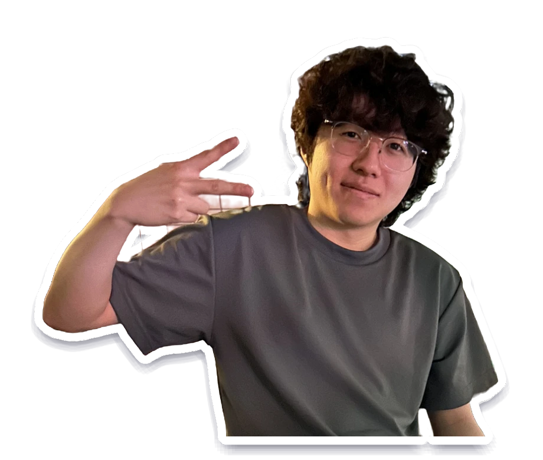

'왜?'를 쫓아 의도를 읽는 기획자
장르를 막론하고, 게임이 추구하는 가치와 방향을 먼저 찾습니다. 그리고 시스템이 그 방향에 맞게 설계되었는지, 의도대로 작동하는지를 탐구합니다.

PROFILE
- 이름
- 이창연
- 지원 직무
- 게임 시스템 기획
- 학력
- 삼육대학교 컴퓨터공학부
2022.03 – 2026.08 졸업 - 이메일
- lcyred001@naver.com
EXPERIENCE
- 라이브 MMORPG 시스템 기획서 3편아이온2 · 제우스: 오만의 신 분석 · 창작
- 산학협력 캡스톤 · Tokyo Desire기획 담당, 스팀 체험판 출시
- 캡스톤디자인 · BapTalkSu총괄 기획, 기능 명세 · 일정 관리
- 게임개발동아리 creator기획 스터디, 역기획서 4편 · 창작 2편
INTERESTS
시스템 기획라이브 서비스 운영게임 경제서버 간 PvPMMORPG로그라이크 덱빌딩
2025–2026 국내 MMORPG 4종을 포함해 104개 게임을 플레이했습니다.
포트폴리오
프로젝트
최근 플레이한 게임
포트폴리오
프로젝트
첫 게임 제작부터 학창 시절 출품, 전공, 동아리, 출시 프로젝트, 시스템 기획서까지.